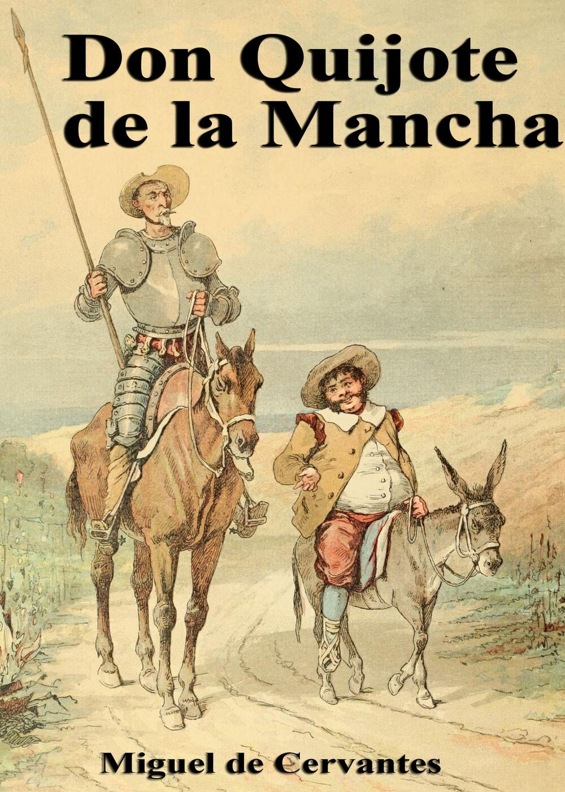

Don Quijote de la Mancha

Ficha Técnica
- Autor: Miguel de Cervantes Saavedra
- Tema: Narrativa
- Año de publicación: 1617
Sinopsís:
Narra la historia de un hidalgo que, fascinado por los libros de caballerías, decide convertirse en caballero andante. Junto a su fiel escudero, Sancho Panza, emprende un viaje lleno de aventuras, desafíos y confusiones entre la realidad y la fantasía.